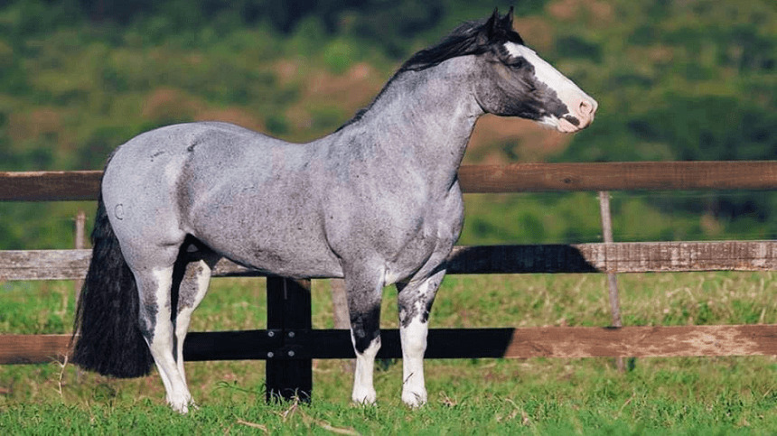

CRIOULO
O crioulo é uma raça de cavalo brasileira. É originário dos animais de sangue andaluz e berbere.
Raça extremamente resistente a alta amplitude térmica, quanto à seca e à falta de alimento.

| Características | |
| Andamento | marcha trotada |
| Cabeça | curta; perfil retilíneo, ligeiramente côncavo ou convexo |
| Tamanho | varia entre 1,40 e 1,50 m na cernelha |
| Pernas | comprimento mediano, ligeiramente inclinadas e fortemente musculadas, caracterizando encontros bem separados |
| Pelagem | A pelagem é geralmente densa e adaptada às condições climáticas da região sul, ajudando a observar-los tanto do frio quanto do calor. |
| Temperamento | tranquilo,esperto mas às vezes arisco |